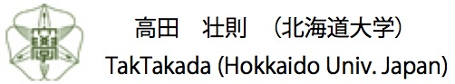

日本生態学会 名称：第67回年会 期間：2020年3月4日(水)～8日(日) 会場：名城大学（名古屋） 締切：2019年10月31日（木）
第二回デモグラフィーワークショップ＆シンポジウム 日時：2017年11月8日（金）－9日（土） 会場：東京大学駒場キャンパス 締切：１１月１日（金）
日本個体群生態学会 名称：第35回年会 日時：2019年9月26日（木）〜9月28日（土） 会場：京都大学北部キャンパス 締切：終了しました
日本数理生物学会 名称：第29回年会 日時：2019年9月14日（土）ー16日(月) 会場：東京工業大学大岡山キャンパス